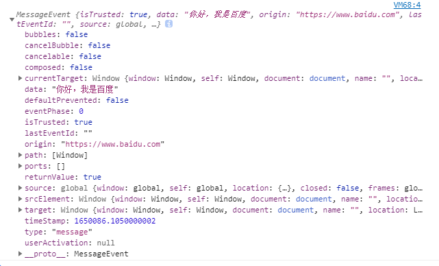

最近在给毕业设计加功能（第三方授权登录），正愁用什么方式让前端知道我授权成功了（前后端分离项目，不想使用轮询）
正好最近在备考1+x考证，在刷题的时候了解到一种前端postMessage技术，决定在这么项目上试试
什么是postMessage
window.postMessage() 方法可以安全地实现跨源通信。通常，对于两个不同页面的脚本，只有当执行它们的页面位于具有相同的协议（通常为https），端口号（443为https的默认值），以及主机 (两个页面的模数 Document.domain设置为相同的值) 时，这两个脚本才能相互通信。window.postMessage() 方法提供了一种受控机制来规避此限制，只要正确的使用，这种方法就很安全。
语法
1 | otherWindow.postMessage(message, targetOrigin, [transfer]); |
为什么使用postMessage
在使用快捷登录的时候（如QQ和微信）会打开一个新的页面进行“授权服务提供商”提供授权，由于是新的窗口所以登录页面如何确认是否授权成功成了一个问题
以往的解决方案是登录页面使用轮询的方式不断请求服务器，来主动判断授权是否成功，但是这样给服务器造成了一定的压力，postMessage能够像ajax请求的响应一样，
登录页面被动得到后端给的信息。
案例
postMessage可以实现两个或多个窗口之间通信，它不受浏览器跨域限制。当然，这仅仅在已打开的窗口中可以
例如：本站 https://www.xiaosm 可以通过这个方法给 https://www.baidu.com 发送信息
- 首先在本站按下 F12 键入以下代码
1
2
3
4
5
6// 通过 js 打开一个新窗口
var open = window.open("https://www.baidu.com");
// 创建一个本站的 message 监听器
window.addEventListener("message", (e) => {
console.log(e);
}); - 在新打开的百度页面中键入以下代码
1
2// 第一个参数需要发送的内容，第二个参数是接收方的地址
window.opener.postMessage("你好，我是百度", "https://www.xiaosm.cn");
可以看到，在本站的控制台中打印了事件回调函数中的参数e
其中origin是发送者的的域名，data是发送的信息
进阶
为了确保我们得到的信息是安全的，所以我们需要对origin进行校验，确保给我们发消息的网站是服务器发来的
所以我们需要对域名地址进行校验，对上面的代码修改后：
1 | // 通过 js 打开一个新窗口 |
与服务器对接
前端代码：
1 | function receiveMsg(e) { |
在授权页授权成功以后，授权服务商调用回调地址后，后台返回一段js代码给新打开的窗口用于给登录页发送消息
后端代码：
1 |
|
window.close();在消息发出以后关闭当前窗口
与此同时，我们的登陆页面收到了后台发来的token，跳转至网站首页postMessage实现了前后端分离项目的第三方授权登录的更高效 更安全的解决方案
补充
注意我在后端的返回js代码的时候写的语句是window.opener.postMessage
不用window的原因是谁接收消息，window对象就是谁
在这里window.opener指向的是创建这个窗口或标签的window
如果接收消息的window对象与window.postMessage中的window对象不是同同一个，则会抛出以下错误
1 | Failed to execute 'postMessage' on 'DOMWindow': The target origin provided ('https://www.xiaosm.cn') does not match the recipient window's origin ('http://localhost:4000') |
- 消息内容不单单可以是文本或数字，还可以是JavaScript对象，这给我们在后期开发带来了许多便利